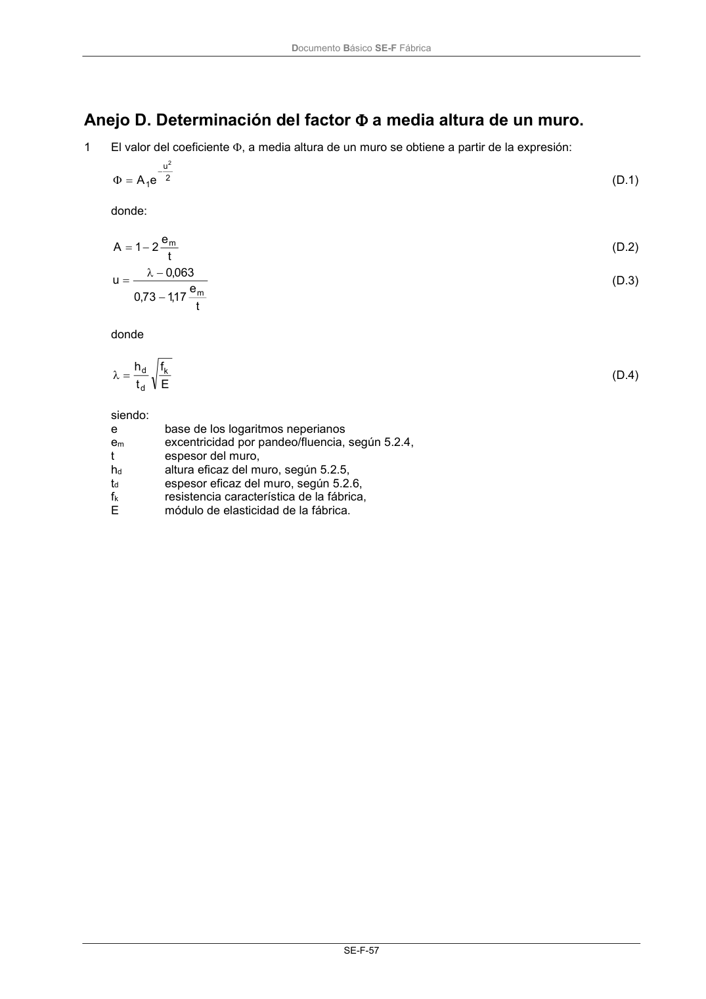

DB-SE-F Fábrica · edición 2019-12-20 · capa oficial
Documento DB-SE-F-oficial · SHA-256 del PDF e3e0805c3b4c307519c26dc34c3fdbf143d842edd013c91b0f52d2c73403d91c
Copia fiel del PDF fuente · Fuente oficial
Ficha de la disposición en la fuente oficial
Formatos: JSON del segmento · Markdown
Anejo C. Valores de resistencia característica a compresión 1 La resistencia característica a la compresión, fk,en N/mm², de una fábrica realizada con mortero ordi- nario con juntas extendidas a todo el grueso, puede calcularse con la ecuación: fk = K· fb0,65 · fm0,25 (C.1) con fm no mayor que 20 N/mm², ni que 0,75 fb donde K es una constante, de valor: a) en muros de una hoja, cuando el grueso de la fábrica sea igual al tizón o a la soga de las piezas K= 0,60 para piezas macizas, K=0,55 para piezas perforadas, K=0,50 para las alige- radas y K=0,40 para las huecas. b) en muros de dos hojas o con suturas continuas, K=0,50 para piezas macizas, K=0,45 para las perforadas y K=0,40 para las aligeradas fb es la resistencia normalizada a la compresión de las piezas de fábrica, en la dirección del es- fuerzo, en N/mm² fm es la resistencia a la compresión especificada del mortero ordinario en N/mm², no mayor que 20 N/mm², ni que fb 2 Resistencia característica a compresión de una fábrica con mortero de junta delgada. a) La resistencia característica a compresión, fk, de una fábrica de piezas macizas, silicocalcáreas o de hormigón celular de autoclave, con mortero de junta delgada, puede calcularse con la ecua- ción C.2: fk = 0,8· fb0,85 (C.2) siempre que las piezas de fábrica tengan tolerancias dimensionales idóneas para su empleo con juntas delgadas; la resistencia normalizada a compresión de las piezas de fábrica, fb, no se tome mayor que 5 N/mm2; la resistencia a compresión del mortero sea igual o mayor que 5 N/mm2; el espesor del muro sea igual a la soga o tizón de las piezas y no haya discontinuidades contenidas en el grueso. b) La resistencia característica a compresión de una fábrica con mortero de junta delgada y piezas distintas a las anteriores (moldeadas o rectificadas para aceptar este tamaño de junta), puede calcularse con la ecuación C.1, siempre que se cumplan los requisitos indicados en el caso a), siendo K=0,70 para piezas macizas, K=0,60 para las perforadas y K=0,50 para las aligeradas. 3 La resistencia característica, fk, en N/mm2 a compresión de una fábrica con mortero ligero, si las piezas son macizas, perforadas o huecas y las juntas son llenas, puede tomarse igual a: fk = K· fb 0,65 (C.3) siempre que fb no se tome mayor que 15 N/mm², que el espesor del muro sea igual a la soga o al tizón de las piezas y no existan discontinuidades verticales en toda o parte de la longitud del muro siendo .- K = 0,80 con mortero ligero de densidad de 600 a 1 500 kg/m³ y piezas de hormigón de árido ligero, según la norma UNE-EN 771-3:2011+A1:2016, o piezas de hormigón celular de auto- clave, según la norma UNE-EN 771-4:2011+A1:2016 - K=0,55 con mortero ligero de densidad de 600 a 700 kg/m³ y piezas de arcilla según la norma UNE-EN 771-1:2011+A1:2016, piezas silicocalcáreas según la norma UNE-EN 771- 2:2011+A1:2016 o piezas de hormigón de árido ordinario según la norma UNE-EN 771- 3:2011+A1:2016 - NOTA. El valor de K incluye la influencia de la resistencia del mortero sobre la resistencia característica a compresión de la fábrica 4 La resistencia característica a compresión de una fábrica con llagas a hueso se puede obtener con las formulas C.1; C.2 y C.3, siempre que la resistencia a cortante se deduzca de la aplicación de la ecuación 4.2 y se consideren la totalidad de las acciones horizontales que puedan aplicarse a la fábrica. 5 Resistencia característica a compresión de una fábrica con tendeles huecos. Documento Básico SE-F Fábrica SE-F-56 a) La resistencia característica a compresión de una fábrica de este tipo, con piezas macizas, asen- tadas sobre dos bandas iguales de mortero ordinario en los bordes exteriores de la tabla de las piezas, se obtendrá con la ecuación C.1, y las limitaciones dadas con ella, si la anchura de cada banda de mortero es no menor que 30 mm; el espesor de la fábrica es igual a la soga o tizón de las piezas de fábrica, y no existan discontinuidades verticales (suturas) en todo o parte del grueso del muro. b) El valor de K es K = 1,1 – bs / t donde: bs es la distancia entre ejes de las bandas de mortero t es el grueso del muro c) La resistencia característica a compresión de fábricas con tendeles huecos, con piezas perfora- das o aligeradas, se obtendrá mediante la ecuación C.1, a partir de la resistencia normalizada a compresión fb de la pieza, obtenida en ensayos según la norma UNE-EN 772-1:2011+A1:2016, realizados sobre piezas preparadas con bandas de mortero no más anchas que las que se em- plearán en la fábrica. La resistencia de la pieza se referirá al área bruta, no al área de las bandas. Documento Básico SE-F Fábrica SE-F-57
